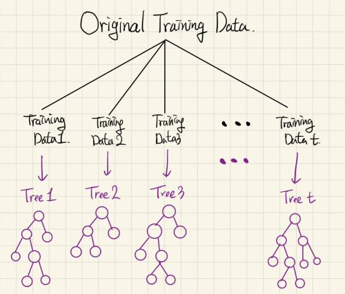

랜덤포레스트(배깅,보팅)
랜덤포레스트
- 유튜브 김성범 교수님 강의 , 전북대학교 최규빈 교수님 강의노트로 학습한 것을 토대로 작성하였습니다.
의사결정나무(개별 트리)의 단점
- 계층적 구조로 인해 중간에 에러가 발생하면 다음 단계에도 에러가 계속 전파됩니다.
- 학습 데이터의 미세한 변동에도 최종 결과에 크게 영향을 끼칠 수 있습니다.
- 적은 개수의 노이즈에도 크게 영향을 받습니다.
- 나무의 최종노드 개수를 늘리면 과적합(Overfitting) 위험이 발생합니다.
\(\rightarrow\) 해결방법 :랜덤포레스트
랜덤포레스트란?
- 여러 Base모델(
의사결정나무)들의 예측을 다수결법칙 or 평균을 이용해 통합하여 예측 정확성을 향상시키는 모델 - 랜덤포레스트 구조를 시각화하면 다음과 같습니다.

- 여기서 Base모델은 서로 독립이고, 무작위 예측보다 성능이 좋아야한다는 전제조건이 필요합니다.
- 랜덤포레스트의 중요한 두가지 키워드는 Diversity와 Random subspace입니다.
Diversity
- 여러 Training data를 생성하여 각 데이터마다 개별 의사결정나무 모델로 구축
- 그럼 개별 의사결정나무에 어떻게 데이터를 할당해주지? \(\rightarrow\) Bagging 이용
Bagging(Bootstrap Aggregating)
- 각 모델은 서로 다른 학습 데이터 셋을 이용합니다.
- 각 모델에 쓰이는 데이터는 원본데이터의 복원추출로 생성됩니다.
- 각 데이터 셋은 원본 데이터의 개수만큼 복원추출을 시행합니다.
\(\rightarrow\) 원본 데이터의 개수가 n개라면 n번의 복원추출 시행 - 위에 랜덤포레스트 구조를 시각화한 것이 이제는 이해가 가시나요?
Random subspace
- 각 개별 트리가 노드를 뻗어나갈 때 필요한 변수는 무작위로 선택됩니다.
Voting
- 학습된 각각의 의사결정나무들로 어떻게 결과를 도출할까요? \(\rightarrow\) Voting이용
- 다음 소개되는 Voting 방법들의 예시는 모두
Classification입니다. - Regression : \(f(x) = \displaystyle\sum_{m=1}^{M}c_mI(x \in R_m)\)
- Classification : \(f(x) = \displaystyle\sum_{m=1}^{M} k(m)I\left\{(x_1,x_2)\in R_m\right\}\)
1. Majority Voting
\(Ensemble(\hat{y}) = \underset{i}\arg\max \left(\displaystyle\sum_{i=1}^{n}I(\hat{y} \in i), i \in \left\{0,1\right\} \right)\)
EX) \(\displaystyle\sum_{i=1}^{n}I(\hat{y} \in 0)=4\) , \(\displaystyle\sum_{i=1}^{n}I(\hat{y} \in 1)=6 \;\Rightarrow\; Ensemble(\hat{y})=1\)
- 1이라고 예측한 모델이 6개, 0이라고 예측한 모델이 4개 즉, 다수결 투표로 1이 예측값이 되었습니다.(Hard Voting)
2. Weighted Voting(weight = training accuracy of individual models)
\(Ensemble(\hat{y}) = \underset{i}\arg\max \Bigg(\displaystyle\frac{\sum_{j=1}^{n}(TrainAcc_{j})I(\hat{y}=1)}{\sum_{j=1}^{n}(TrainAcc_{j})}, i \in \left\{0,1 \right\}\Bigg)\)
EX) \(\displaystyle\frac{\sum_{j=1}^{n}(TrainAcc_{j})I(\hat{y}=0)}{\sum_{j=1}^{n}(TrainAcc_{j})} = 0.4\) , \(\displaystyle\frac{\sum_{j=1}^{n}(TrainAcc_{j})I(\hat{y}=1)}{\sum_{j=1}^{n}(TrainAcc_{j})} = 0.6\)
\(\Rightarrow\; Ensemble(\hat{y}) = 1\) * 각 모델의 Accuracy를 바탕으로 가중치가 부여됩니다. 높은 Accuracy를 가진 모델은 더 많은 가중치를 갖게 됩니다.(가중치 평균을 이용한 Voting)
3. Weighted Voting (weight = predicted probability for each class)
\(Ensemble(\hat{y}) = \underset{i}\arg\max\big(\displaystyle\frac1n \sum_{j=1}^{n}P(\hat{y}=i), i \in \left\{0,1 \right\}\big)\)
EX) \(\displaystyle\frac1n \sum_{j=1}^{n}P(\hat{y}=0)=0.3\) , \(\displaystyle\frac1n \sum_{j=1}^{n}P(\hat{y}=1)=0.7 \;\Rightarrow\; Ensemble(\hat{y}) = 1\)
- 각 모델들이 예측할 확률들의 평균을 구한 후에, 다수결을 이용하여 최조 선택하는 방식입니다.
- 0이 나올 확률들의 평균값은 0.3 , 1이 나올 확률들의 평균값은 0.7이므로 1이 예측값이 되었습니다.(Soft Voting)
- 실제로 Voting은 랜덤포레스트에서만 사용되는 앙상블 기법은 아닙니다. 랜덤포레스트에서 Voting은 동일한 모델(의사결정나무)들에서 Voting을 하는 반면에, 좀 더 일반적인 Voting은 다양한 모델에서 투표를 하는 방식으로 이루어집니다.
코드 구현
(추후 업로드 예정)